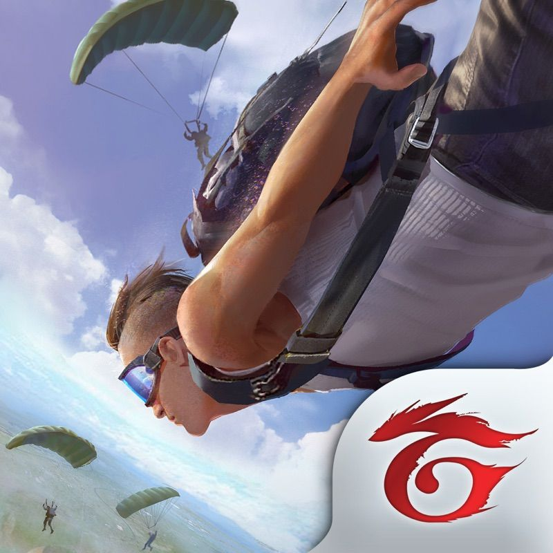
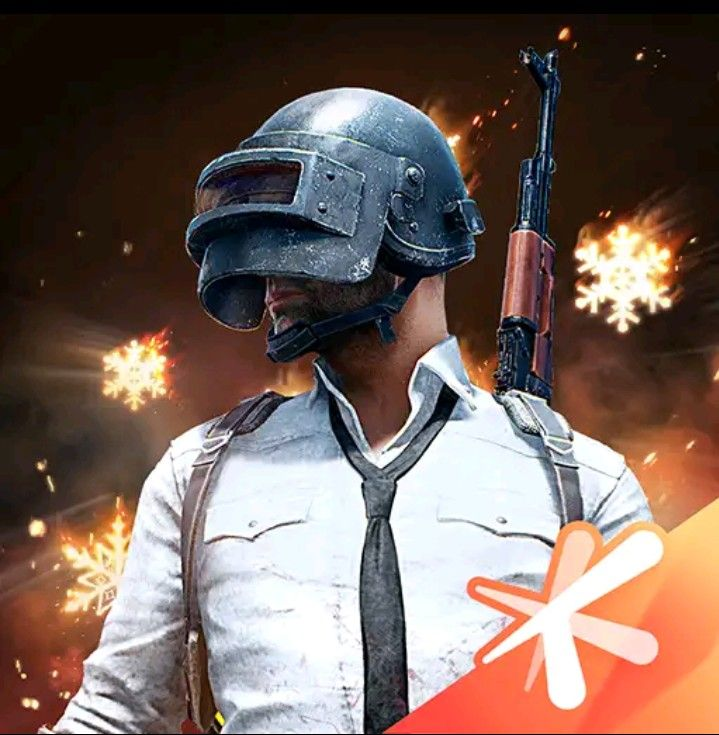
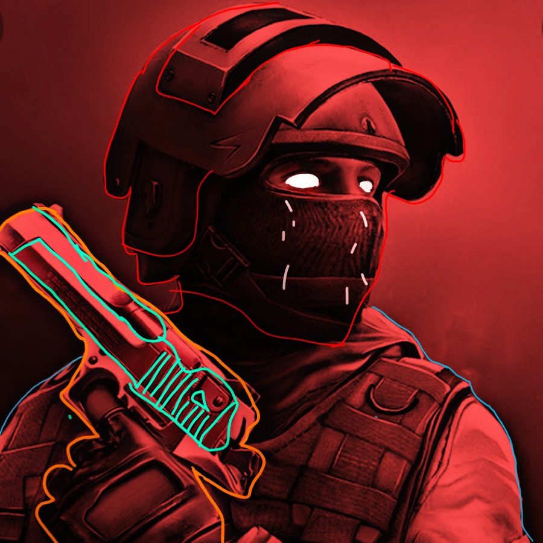

Free Fire |
|  | Garena Free Fire (также известная как Free Fire Battlegrounds и Free Fire) — условно-бесплатная мобильная многопользовательская онлайн-игра в жанре королевской битвы, разработанная компанией 111dots Studio и изданная Garena в 2017 году для платформ Android и iOS. Является одной из самых популярных мобильных игр в этом жанре. |
PUBG |
|  | PlayerUnknown’s Battlegrounds Mobile (сокращённо PUBG Mobile) — условно-бесплатная мобильная многопользовательская онлайн-игра в жанре королевской битвы. Разработчик — LightSpeed & Quantum Studio, являющийся подразделением Tencent Games. Игра является мобильной версией оригинальной PlayerUnknown’s Battlegrounds, разработанной PUBG Corporation (ныне PUBG Studios). Релиз состоялся 19 марта 2018 года для iOS и Android. |
Standoff 2 |
|  | Standoff 2 представляет собой классический шутер от первого лица с различными режимами игры и арсеналом современного российского и иностранного оружия. Каждое оружие обладает различным набором характеристик, ограничивающих тактические возможности игрока: пробиваемость брони, отдача, темп стрельбы, цена, награда за убийство, боезапас |